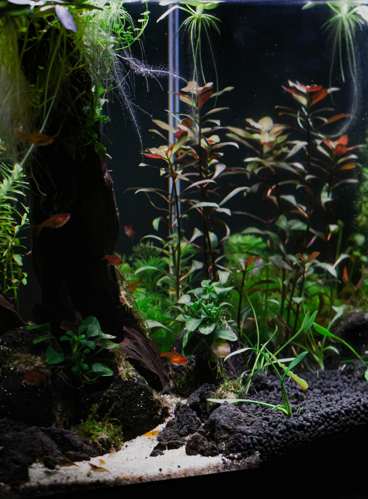

Favorite Music
One of my favorite artists is Charlie Puth. His newest album is Whatever's Clever!

A few of the things I like most, by Ben
My favorite movie is Harry Potter and the Prisoner of Azkaban. It is the third of movie in the Harry Potter series, and many consider it to be one of the best.
One of my favorite artists is Charlie Puth. His newest album is Whatever's Clever!
| Lake | Fish | Best Season |
|---|---|---|
| Lake Minnetonka | Walleye | Spring |
| Mille Lacs Lake | Northern Pike | Summer |
